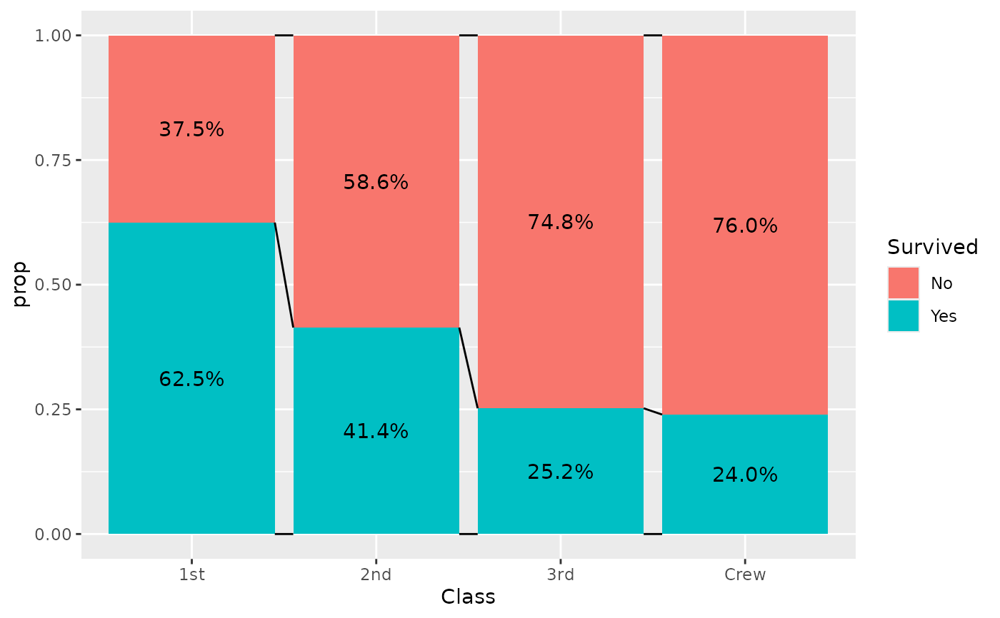

geom_prop_bar(), geom_prop_text() and geom_prop_connector() are
variations of ggplot2::geom_bar(), ggplot2::geom_text() and
geom_bar_connector() using stat_prop(), with custom default aesthetics:
after_stat(prop) for x or y, and
scales::percent(after_stat(prop)) for label.
Usage
geom_prop_bar(
mapping = NULL,
data = NULL,
position = "stack",
...,
width = 0.9,
complete = NULL,
default_by = "x"
)
geom_prop_text(
mapping = ggplot2::aes(!!!auto_contrast),
data = NULL,
position = ggplot2::position_stack(0.5),
...,
complete = NULL,
default_by = "x"
)
geom_prop_connector(
mapping = NULL,
data = NULL,
position = "stack",
...,
width = 0.9,
complete = "fill",
default_by = "x"
)Arguments
- mapping
Set of aesthetic mappings created by
aes(). If specified andinherit.aes = TRUE(the default), it is combined with the default mapping at the top level of the plot. You must supplymappingif there is no plot mapping.- data
The data to be displayed in this layer. There are three options:
If
NULL, the default, the data is inherited from the plot data as specified in the call toggplot().A
data.frame, or other object, will override the plot data. All objects will be fortified to produce a data frame. Seefortify()for which variables will be created.A
functionwill be called with a single argument, the plot data. The return value must be adata.frame, and will be used as the layer data. Afunctioncan be created from aformula(e.g.~ head(.x, 10)).- position
A position adjustment to use on the data for this layer. This can be used in various ways, including to prevent overplotting and improving the display. The
positionargument accepts the following:The result of calling a position function, such as
position_jitter(). This method allows for passing extra arguments to the position.A string naming the position adjustment. To give the position as a string, strip the function name of the
position_prefix. For example, to useposition_jitter(), give the position as"jitter".For more information and other ways to specify the position, see the layer position documentation.
- ...
Additional parameters passed to
ggplot2::geom_bar(),ggplot2::geom_text()orgeom_bar_connector().- width
Bar width (
0.9by default).- complete
Name (character) of an aesthetic for those statistics should be completed for unobserved values (see example).
- default_by
If the by aesthetic is not available, name of another aesthetic that will be used to determine the denominators (e.g.
"fill"), orNULLor"total"to compute proportions of the total. To be noted,default_by = "x"works both for vertical and horizontal bars.
Examples
library(ggplot2)
d <- as.data.frame(Titanic)
ggplot(d) +
aes(x = Class, fill = Survived, weight = Freq) +
geom_prop_bar() +
geom_prop_text() +
geom_prop_connector()

ggplot(d) +
aes(y = Class, fill = Survived, weight = Freq) +
geom_prop_bar(width = .5) +
geom_prop_text() +
geom_prop_connector(width = .5, linetype = "dotted")
ggplot(d) +
aes(
x = Class,
fill = Survived,
weight = Freq,
y = after_stat(count),
label = after_stat(count)
) +
geom_prop_bar() +
geom_prop_text() +
geom_prop_connector()